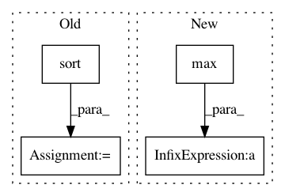

1515fa64e1c94bca111980ed71b0423b891c5189,dipy/reconst/dsi.py,,create_qtable,#Any#Any#,329
Before Change
bv = gtab.bvals
bmin = np.sort(bv)[1]
// bsorted = np.sort(bv[np.bitwise_not(gtab.b0s_mask)])
// for i in range(len(bsorted)):
// bmin = bsorted[i]
After Change
for i in range(len(bsorted)):
bmin = bsorted[i]
try:
if np.sqrt(bv.max() / bmin) > origin + 1:
continue
else:
break
In pattern: SUPERPATTERN
Frequency: 3
Non-data size: 4
Instances
Project Name: nipy/dipy
Commit Name: 1515fa64e1c94bca111980ed71b0423b891c5189
Time: 2015-11-13
Author: garyfallidis@gmail.com
File Name: dipy/reconst/dsi.py
Class Name:
Method Name: create_qtable
Project Name: rusty1s/pytorch_geometric
Commit Name: d8a075668b6e9cdf4c08f6c7285e5c7d2fbf5332
Time: 2017-10-17
Author: matthias.fey@tu-dortmund.de
File Name: torch_geometric/graph/geometry.py
Class Name:
Method Name: edges_from_faces
Project Name: rusty1s/pytorch_geometric
Commit Name: 5980bd68fcd65ffe90fe560ff7db3f01e861426e
Time: 2017-11-02
Author: matthias.fey@tu-dortmund.de
File Name: torch_geometric/transform/graclus.py
Class Name:
Method Name: compute_perms